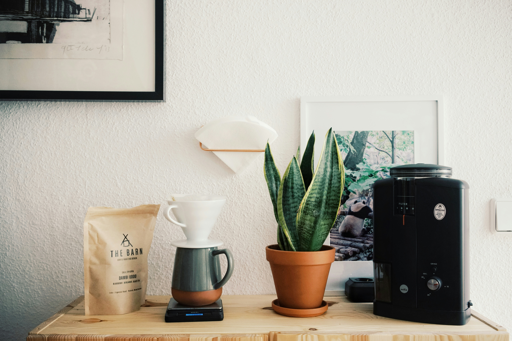

L2-L3 · Making It at Home

Lately, I have been making most of my coffee at home. Sometimes I just brew it normally in the morning, but I also really like making cold brew and letting it sit overnight. It makes the next morning super easy because the coffee is already ready to go.
Making coffee at home can be as simple or as extra as I want it to be.
What I add depends on what I am in the mood for. I like making homemade syrups because I can play around with different flavors and make them exactly how I like them. Other days I keep it really simple with maple syrup and oat milk. I actually like that making coffee at home can be as simple or as extra as I want it to be. Some mornings I want to put more effort into it, and other mornings I just want something quick that still tastes good.
Coffee Changes With the Seasons
My coffee definitely changes with the seasons. During fall and winter, I usually want something warm. A hot coffee just feels better when the weather is colder, and I tend to like richer or more comforting flavors around that time too.
Once spring and summer come around, I usually switch over to iced coffee or cold brew. I like drinks that feel lighter and more refreshing when it is hot outside. There is something about pouring coffee over ice on a warm morning that just feels right. I think that is part of what keeps coffee interesting for me too. I drink it all year, but I do not necessarily drink it the same way all year.
L4-L5 · Trying Something New
I also really enjoy trying new coffee shops whenever I get the chance. It is fun to see what kinds of drinks they make and try flavor combinations that I might not normally think of. Sometimes I end up finding something I really like and want to recreate it at home. I like the atmosphere of a good coffee shop too, but the coffee itself matters the most to me. A place can be cute and have a great menu, but if the coffee is not good, it kind of defeats the point.
Even though I like trying new places, I have definitely been making coffee at home more often lately. I like being able to make it exactly how I want it, and it is nice having that little routine in the morning.
Why the Ritual Matters
There is not really one big reason why coffee matters to me. I just love it. I love how it smells when it is brewing, how it tastes, and how it gives me something to look forward to in the morning. It helps me get going and makes the start of my day feel a little more complete.
Whether I am making a hot coffee in the winter, cold brew in the summer, or trying something new at a coffee shop, it is a small thing that I genuinely enjoy. It does not have to be fancy. Sometimes it is literally just coffee, maple syrup, and oat milk. But even something that simple has become part of how I start my day, and that is probably what I like about it most.